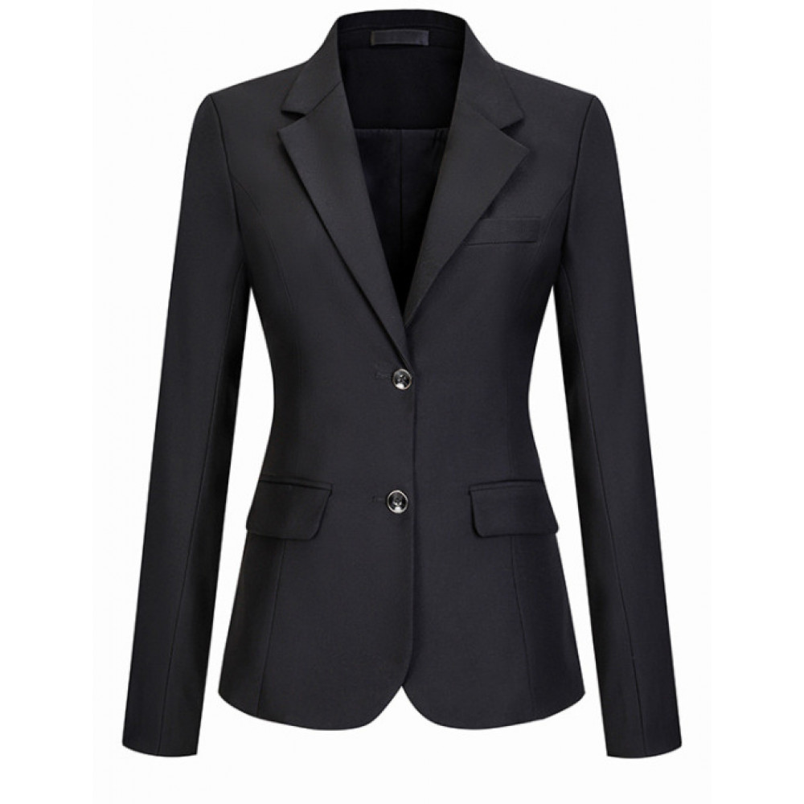

Редингот - длинный сюртукСюрту́к (устар. серту́к; от фр. surtout) — длинный, как правило до колена, однобортный или, реже, двубортный предмет мужского гардероба, обычно приталенный. широкого покроя (первоначально надевавшийся для верховой езды). Князь надел изящный редингот с атласными отворотами. □ неизм.; в зн. прил. О фасоне современной верхней женской одежды широкого покроя. Жакет-редингот. Пальто типа редингот.
